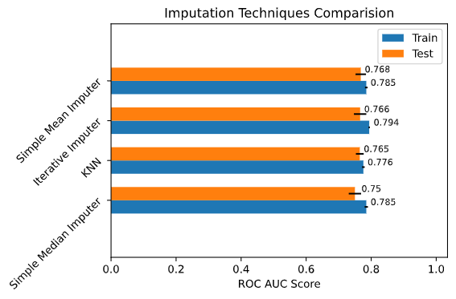

Imputation Selector¶
This module allows us to select imputation strategies.
ImputationSelector
¶
Comparison of various imputation strategies.
that can be used for imputing missing values.
The aim of this class is to present the model performance based on imputation
strategies and a choosen model.
For models like XGBoost & LighGBM which have capabilities to handle missing values by default
the model performance with no imputation will be shown as well.
The missing values categorical features are imputed with the value missing and an missing indicator is
added.
Example usage.
#Import the class
import pandas as pd
import numpy as np
import matplotlib.pyplot as plt
from probatus.missing_values.imputation import ImputationSelector
from probatus.utils.missing_helpers import generate_MCAR
from sklearn.linear_model import LogisticRegression
from sklearn.experimental import enable_iterative_imputer
from sklearn.impute import KNNImputer,SimpleImputer,IterativeImputer
from sklearn.datasets import make_classification
# Create data with missing values.
n_features = 10
X,y = make_classification(n_samples=1000,n_features=n_features,random_state=123,class_sep=0.3)
X = pd.DataFrame(X, columns=["f_"+str(i) for i in range(0,n_features)])
X_missing = generate_MCAR(X,missing=0.2)
# Create the strategies.
strategies = {
'Simple Median Imputer' : SimpleImputer(strategy='median',add_indicator=True),
'Simple Mean Imputer' : SimpleImputer(strategy='mean',add_indicator=True),
'Iterative Imputer' : IterativeImputer(add_indicator=True,n_nearest_features=5,
sample_posterior=True),
'KNN' : KNNImputer(n_neighbors=3)}
#Create a classifier.
clf = LogisticRegression()
#Create the comparision of the imputation strategies.
cmp = ImputationSelector(
clf=clf,
strategies=strategies,
cv=5,
model_na_support=False)
cmp.fit_compute(X_missing,y)
#Plot the results.
performance_plot=cmp.plot()

__init__(self, clf, strategies, scoring='roc_auc', cv=5, model_na_support=False, n_jobs=-1, verbose=0, random_state=None)
special
¶
Initialise the class.
Args : clf (binary classifier,sklearn.Pipeline): A binary classification model, that will used to evaluate various imputation strategies.
strategies (dictionary of sklearn.impute objects or any other scikit learn compatible imputer.):
Dictionary containing the sklearn.impute objects.
e.g.
strategies = {'KNN' : KNNImputer(n_neighbors=3),
'Simple Median Imputer' : SimpleImputer(strategy='median',add_indicator=True),
'Iterative Imputer' : IterativeImputer(add_indicator=True,n_nearest_features=5,
sample_posterior=True)}
This allows you to have fine grained control over the imputation method.
scoring (string, list of strings, probatus.utils.Scorer or list of probatus.utils.Scorers, optional):
Metrics for which the score is calculated. It can be either a name or list of names metric names and
needs to be aligned with predefined [classification scorers names in sklearn](https://scikit-learn.org/stable/modules/model_evaluation.html).
Another option is using probatus.utils.Scorer to define a custom metric.
model_na_support(boolean): default False
If the classifier supports missing values by default e.g. LightGBM,XGBoost etc.
If True an default comparison `No Imputation` result will be added indicating the model performance without any explict imputation.
If False only the provided strategies will be used.
n_jobs (int, optional):
Number of cores to run in parallel while fitting across folds. None means 1 unless in a
`joblib.parallel_backend` context. -1 means using all processors.
verbose (int, optional):
Controls verbosity of the output:
- 0 - nether prints nor warnings are shown
- 1 - 50 - only most important warnings regarding data properties are shown (excluding SHAP warnings)
- 51 - 100 - shows most important warnings, prints of the feature removal process
- above 100 - presents all prints and all warnings (including SHAP warnings).
random_state (int, optional):
Random state set at each round of feature elimination. If it is None, the results will not be
reproducible and in random search at each iteration a different hyperparameters might be tested. For
reproducible results set it to integer.
Source code in probatus/missing_values/imputation.py
def __init__(
self,
clf,
strategies,
scoring="roc_auc",
cv=5,
model_na_support=False,
n_jobs=-1,
verbose=0,
random_state=None,
):
"""
Initialise the class.
Args :
clf (binary classifier,sklearn.Pipeline):
A binary classification model, that will used to evaluate various imputation strategies.
strategies (dictionary of sklearn.impute objects or any other scikit learn compatible imputer.):
Dictionary containing the sklearn.impute objects.
e.g.
strategies = {'KNN' : KNNImputer(n_neighbors=3),
'Simple Median Imputer' : SimpleImputer(strategy='median',add_indicator=True),
'Iterative Imputer' : IterativeImputer(add_indicator=True,n_nearest_features=5,
sample_posterior=True)}
This allows you to have fine grained control over the imputation method.
scoring (string, list of strings, probatus.utils.Scorer or list of probatus.utils.Scorers, optional):
Metrics for which the score is calculated. It can be either a name or list of names metric names and
needs to be aligned with predefined [classification scorers names in sklearn](https://scikit-learn.org/stable/modules/model_evaluation.html).
Another option is using probatus.utils.Scorer to define a custom metric.
model_na_support(boolean): default False
If the classifier supports missing values by default e.g. LightGBM,XGBoost etc.
If True an default comparison `No Imputation` result will be added indicating the model performance without any explict imputation.
If False only the provided strategies will be used.
n_jobs (int, optional):
Number of cores to run in parallel while fitting across folds. None means 1 unless in a
`joblib.parallel_backend` context. -1 means using all processors.
verbose (int, optional):
Controls verbosity of the output:
- 0 - nether prints nor warnings are shown
- 1 - 50 - only most important warnings regarding data properties are shown (excluding SHAP warnings)
- 51 - 100 - shows most important warnings, prints of the feature removal process
- above 100 - presents all prints and all warnings (including SHAP warnings).
random_state (int, optional):
Random state set at each round of feature elimination. If it is None, the results will not be
reproducible and in random search at each iteration a different hyperparameters might be tested. For
reproducible results set it to integer.
""" # noqa
self.clf = clf
self.model_na_support = model_na_support
self.cv = cv
self.scorer = get_single_scorer(scoring)
self.strategies = strategies
self.verbose = verbose
self.n_jobs = n_jobs
self.random_state = random_state
self.fitted = False
self.report_df = pd.DataFrame([])
compute(self)
¶
Checks if fit() method has been run.
and computes the DataFrame with results of imputation for each strategy.
Returns:
| Type | Description |
|---|---|
(pd.DataFrame) |
DataFrame with results of imputation for each strategy. |
Source code in probatus/missing_values/imputation.py
def compute(self):
"""
Checks if fit() method has been run.
and computes the DataFrame with results of imputation for each
strategy.
Returns:
(pd.DataFrame):
DataFrame with results of imputation for each strategy.
"""
self._check_if_fitted()
return self.report_df
fit(self, X, y, column_names=None)
¶
Calculates the cross validated results for various imputation strategies.
Parameters:
| Name | Type | Description | Default |
|---|---|---|---|
X |
pd.DataFrame |
input variables. |
required |
y |
pd.Series |
target variable. |
required |
column_names |
None, or list of str |
List of feature names for the dataset. If None, then column names from the X dataframe are used. |
None |
Source code in probatus/missing_values/imputation.py
def fit(self, X, y, column_names=None):
"""
Calculates the cross validated results for various imputation strategies.
Args:
X (pd.DataFrame):
input variables.
y (pd.Series):
target variable.
column_names (None, or list of str, optional):
List of feature names for the dataset.
If None, then column names from the X dataframe are used.
"""
if self.random_state is not None:
np.random.seed(self.random_state)
# Place holder for results.
results = []
self.X, self.column_names = preprocess_data(X, column_names=column_names, verbose=self.verbose)
self.y = preprocess_labels(y, index=self.X.index, verbose=self.verbose)
# Identify categorical features.
categorical_columns = X.select_dtypes(include=["category", "object"]).columns
# Identify the numeric columns.Numeric columns are all columns expect the categorical columns
numeric_columns = X.select_dtypes("number").columns
for strategy in self.strategies:
numeric_transformer = Pipeline(steps=[("imputer", self.strategies[strategy])])
categorical_transformer = Pipeline(
steps=[
(
"imp_cat",
SimpleImputer(
strategy="constant",
fill_value="missing",
add_indicator=True,
),
),
("ohe_cat", OneHotEncoder(handle_unknown="ignore")),
]
)
preprocessor = ColumnTransformer(
transformers=[
("num", numeric_transformer, numeric_columns),
("cat", categorical_transformer, categorical_columns),
],
remainder="passthrough",
)
model_pipeline = Pipeline(steps=[("preprocessor", preprocessor), ("classifier", self.clf)])
temp_results = self._calculate_results(X, y, clf=model_pipeline, strategy=strategy)
results.append(temp_results)
# If model supports missing values by default, then calculate the scores
# on raw data without any imputation.
if self.model_na_support:
categorical_transformer = Pipeline(
steps=[
("ohe_cat", OneHotEncoder(handle_unknown="ignore")),
]
)
preprocessor = ColumnTransformer(
transformers=[("cat", categorical_transformer, categorical_columns)],
remainder="passthrough",
)
model_pipeline = Pipeline(steps=[("preprocessor", preprocessor), ("classifier", self.clf)])
temp_results = self._calculate_results(X, y, clf=model_pipeline, strategy="No Imputation")
results.append(temp_results)
self.report_df = pd.DataFrame(results)
# Set the index of the dataframe to the imputation methods.
self.report_df = self.report_df.set_index(self.report_df.strategy, "strategy")
self.report_df.drop(columns=["strategy"], inplace=True)
self.report_df.sort_values(by="mean_test_score", inplace=True)
self.fitted = True
return self
fit_compute(self, X, y, column_names=None)
¶
Calculates the cross validated results for various imputation strategies.
Parameters:
| Name | Type | Description | Default |
|---|---|---|---|
X |
pd.DataFrame |
input variables. |
required |
y |
pd.Series |
target variable. |
required |
column_names |
None, or list of str |
List of feature names for the dataset. If None, then column names from the X dataframe are used. |
None |
Returns:
| Type | Description |
|---|---|
(pd.DataFrame) |
DataFrame with results of imputation for each strategy. |
Source code in probatus/missing_values/imputation.py
def fit_compute(self, X, y, column_names=None):
"""
Calculates the cross validated results for various imputation strategies.
Args:
X (pd.DataFrame):
input variables.
y (pd.Series):
target variable.
column_names (None, or list of str, optional):
List of feature names for the dataset.
If None, then column names from the X dataframe are used.
Returns:
(pd.DataFrame):
DataFrame with results of imputation for each strategy.
"""
self.fit(X, y, column_names=column_names)
return self.compute()
plot(self, show=True, **figure_kwargs)
¶
Generates plot of the performance of various imputation strategies.
Parameters:
| Name | Type | Description | Default |
|---|---|---|---|
show |
bool |
If True, the plots are showed to the user, otherwise they are not shown. Not showing plot can be useful, when you want to edit the returned axis, before showing it. |
True |
**figure_kwargs |
|
Keyword arguments that are passed to the plt.figure, at its initialization. |
{} |
Returns:
| Type | Description |
|---|---|
(plt.axis) |
Axis containing the performance plot. |
Source code in probatus/missing_values/imputation.py
def plot(self, show=True, **figure_kwargs):
"""
Generates plot of the performance of various imputation strategies.
Args:
show (bool, optional):
If True, the plots are showed to the user, otherwise they are not shown. Not showing plot can be useful,
when you want to edit the returned axis, before showing it.
**figure_kwargs:
Keyword arguments that are passed to the plt.figure, at its initialization.
Returns:
(plt.axis):
Axis containing the performance plot.
"""
fig, ax = plt.subplots(**figure_kwargs)
report_df = self.compute()
imp_methods = list(report_df.index)
test_performance = list(report_df["mean_test_score"])
test_std_error = list(report_df["test_score_std"])
train_performance = list(report_df["mean_train_score"])
train_std_error = list(report_df["train_score_std"])
y = np.arange(len(imp_methods)) # the label locations
width = 0.35 # the width of the bars
def _autolabel(rects):
"""
Label the bars of the plot.
"""
for rect in rects:
width = rect.get_width()
ax.annotate(
"{}".format(width),
xy=((width + 0.05 * width), rect.get_y() + rect.get_height() / 2),
xytext=(4, 0), # 4 points horizontal offset
textcoords="offset points",
ha="center",
va="bottom",
fontsize="small",
)
train_rect = ax.barh(
y - width / 2,
train_performance,
width,
xerr=train_std_error,
align="center",
label="CV-Train",
)
test_rect = ax.barh(
y + width / 2,
test_performance,
width,
xerr=test_std_error,
align="center",
label="CV-Test",
)
_autolabel(train_rect)
_autolabel(test_rect)
ax.set_xlabel(f'{self.scorer.metric_name.replace("_"," ").upper()} Score')
ax.set_title("Imputation Techniques Comparision")
ax.set_yticks(y)
ax.set_yticklabels(imp_methods, rotation=45)
plt.margins(0.2)
plt.legend(loc="best", ncol=2)
fig.tight_layout()
if show:
plt.show()
else:
plt.close()
return ax